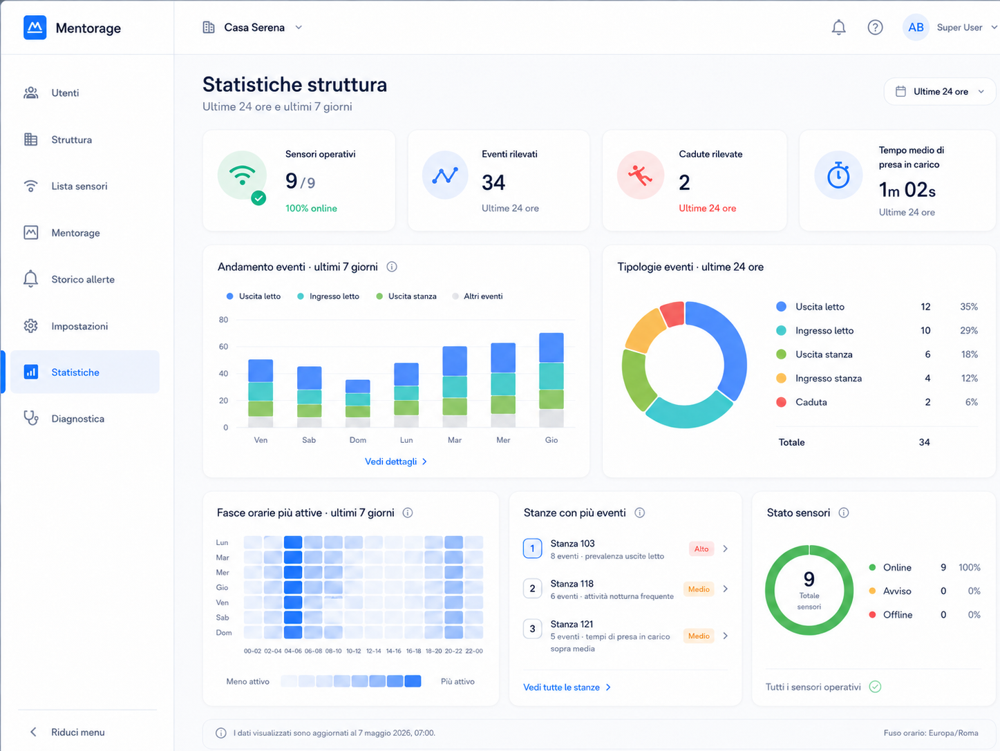

Decisioni più consapevoli
Indicatori chiari su alert, tempi di risposta e aree critiche per coordinare meglio le attività.
Statistiche
Mentorage offre una doppia lettura dei dati: una panoramica aggregata per seguire l'andamento generale della struttura e una vista individuale per approfondire il periodo monitorato di ogni ospite.
Indicatori chiari su alert, tempi di risposta e aree critiche per coordinare meglio le attività.
Scendi nel dettaglio del singolo ospite per comprendere comportamenti e andamento notturno.

Quando serve approfondire, passi dal quadro generale al dettaglio del singolo ospite.
Statistiche ospite
Una sintesi completa della notte monitorata, con visualizzazioni intuitive che aiutano a comprendere il comportamento e l'andamento nel tempo.
Quanto tempo l'ospite ha trascorso a letto durante il periodo monitorato.
Il tempo in cui l'ospite è rimasto seduto.
Il tempo in cui l'ospite è stato in piedi o in movimento.
Una linea temporale mostra i cambi di stato durante la notte, in modo immediato.
6 Mag - 7 Mag 2025 · Periodo di monitoraggio: 21:30 - 07:00
A letto
7h 12m 75,2% del tempo totaleSeduto
1h 47m 18,5% del tempo totaleIn piedi
0h 31m 6,3% del tempo totaleCambi di stato lungo tutta la notte
Le statistiche sono calcolate in base ai dati raccolti dai sensori e servono a offrire una lettura più chiara del periodo monitorato.
Dati raccolti dai sensori 3D e algoritmi di intelligenza artificiale.
Privacy e sicurezza dei dati al primo posto, nel rispetto delle normative.
Informazioni essenziali visualizzate in modo chiaro e senza complessità.
Disponibile da web e da dispositivi mobile, ovunque e in ogni momento.